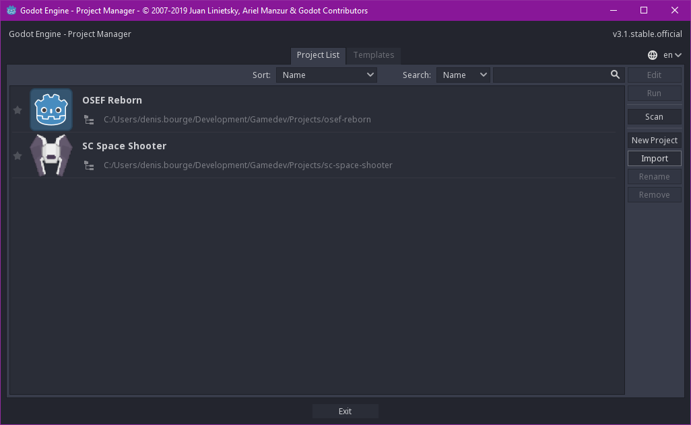
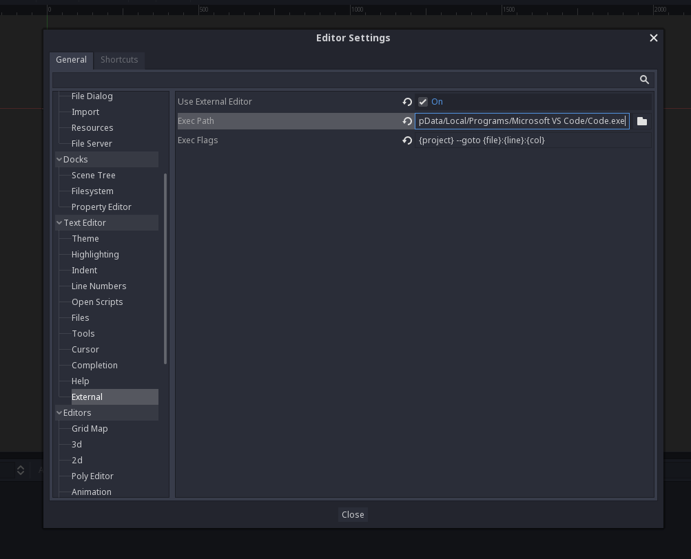
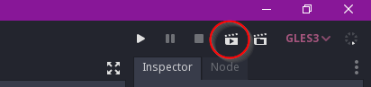
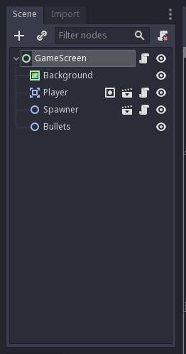
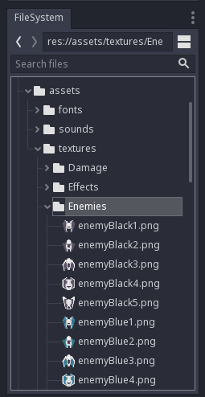
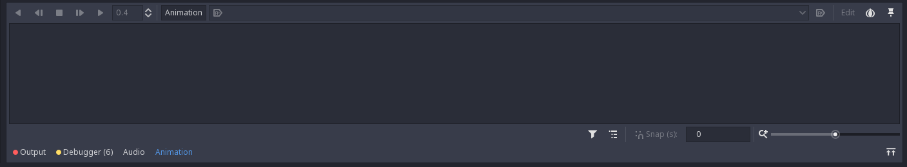
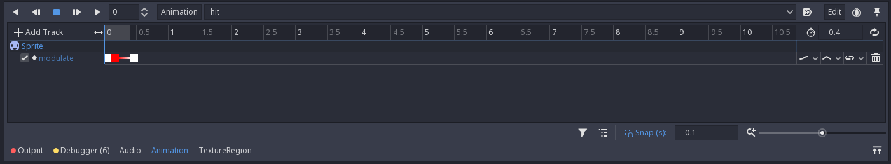
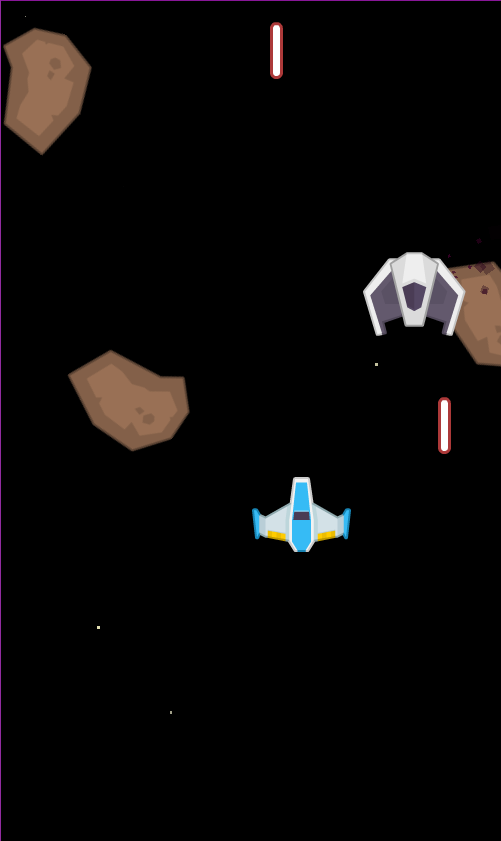

Introduction
Bienvenue sur ce Coding Dojo un peu spécial.
Aujourd'hui, on va découvrir le fabuleux monde du gamedev et apprendre à créer un jeu vidéo !
Vous allez voir, ça sera plus simple que ça en a l'air !

Pré-requis
Avant de commencer notre session, vous aurez besoin de:

- Windows: même si ce moteur qu'on va utiliser est compatible Linux et Mac, on va se concentrer sur Windows aujourd'hui.

- Visual Studio Code: normalement tout le monde sait déja ce que c'est, et tout le monde devrait l'avoir d'installé.
- Disponible ici: https://code.visualstudio.com/

- Godot Engine 3.1.1: le moteur de jeu open-source que je vais vous présenter aujourd'hui.
- Disponible ici https://godotengine.org/download/windows
Même si Godot contient un éditeur intégré, je conseille quand même Visual Studio Code parce qu'il est quand même plus pratique et plus riche en fonctionnalités.
Théorie - Game development

C'est quoi le game development (gamedev) ?
Je vais volontairement vulgariser les choses et aller vite sur le sujet, vu que c'est un sujet hyper vaste.
Le gamedev c'est (en gros) le domaine où l'on conçoit des jeux vidéos de A à Z.
Le gamedev est une branche du développement très complexe et passionante, considérée parmi les branches les plus difficiles du monde du développement. Quand on réalise un jeu, surtout avec un point de vue et des compétences de développeur, on a finalement besoin de pas mal de sujets à explorer.
Entre autres, il faut s'occuper:
- De la partie gameplay: mettre en place une bonne mécanique de jeu
- De la partie scénario: il faut bien une histoire ou alors un environnement cohérent
- De la partie graphique: des sprites, des tilemaps, des backgrounds, n'importe quelle ressource graphique
- De la partie son: effets sonores et musiques, interaction des sons avec le gameplay
- De la partie réseau: pour le multijoueur c'est quand même mieux (après il est possible de faire du split-screen à l'ancienne)
- De la partie physique: collisions et réactions plus ou moins réalistes
- De la partie moteur/engine: le(s) système(s) sous-jacent(s) qui s'occupe(nt) de tout coordonner
- Et encore d'autres parties spécialisées comme par exemple le scripting pour dynamiquement exécuter du code lors du level design
Vous aurez compris, pour chacune de ces parties, on peut nécessiter une ou plusieurs personnes à temps plein (notamment la partie engine qui est la plus technique).
Seulement, dans le monde d'aujourd'hui, il est entièrement possible de créer un jeu en solo (ou en équipe réduite), il faut juste de la patience, de l'investissement, de la réflexion, et surtout beaucoup de pratique.
Il y a une règle que j'ai lu quelque part qui dit en gros que "tes dix premiers jeux vidéos seront plutôt mauvais, et après ça ira mieux". Donc il faut pratiquer.
Comment on fait un jeu en pratique ?
Il y a en gros trois manières de faire un jeu vidéo.
Sans rien
La première, c'est de partir de zéro en mode warrior, avec son langage préféré et son couteau. D'ailleurs le langage préféré est un peu biaisé ici, dans le monde du gamedev on utilise surtout C++.
Autant vous dire que c'est la manière la plus difficile, qu'il y a juste énormément de choses à gérer pour faire tourner son jeu ne serait-ce que sur une seule plateforme, et que comme il faut tout faire à la main ça demande énormément de temps puisque tout va devoir se faire en code, sauf si vous prenez en plus le temps de faire des éditeurs.
On ne va donc pas faire ça aujourd'hui, même si d'un point de vue éducationnel, ça peut être hyper enrichissant de faire son propre jeu (ou son propre framework, voire son propre moteur de jeu) depuis zéro (ou depuis un petit framework).
Dans le monde professionnel, et surtout à l'époque, la plupart des jeux sont crées de cette manière là, avec un contrôle total où l'équipe chargée du développement du jeu s'occupe aussi de la réalisation de tout ce qu'il y a sous le jeu.
Avec un game framework
La deuxième technique, c'est d'utiliser un framework. Tout comme dans le monde du développement web qu'on connaît désormais assez bien, il existe des frameworks qui exposent déjà la plupart des fonctionnalités complexes, il faut juste se servir et composer son jeu via les primitives. Voici des exemples connus de frameworks:
-
Frameworks plutôt minimalistes:
- SDL (C): Bonne base pour construire autour, gère la partie cross-platform et gestion de la fenêtre et des évènements. Plusieurs bindings dans d'autres langages.
- SFML (C++): Equivalent plus haut niveau de la SDL, plus de fonctionnalités. Plusieurs bindings dans d'autres langages.
-
Frameworks plus complets:
- LibGDX (JVM): Framework complet plutôt simple à utiliser.
- Phaser (JS): Contient une super documentation avec pas mal d'exemples, et tourne sur le navigateur.
- XNA/MonoGame (C#): Le bon vieux projet XNA réalisé par Microsoft pour faire des jeux cross-platform Windows/Xbox 360 a l'époque. Beaucoup de jeux indépendants connus ont été réalisés via XNA, dont Super Meat Boy, Bastion, Fez et bien d'autres.
- XNA ayant été "tué" par Microsoft, le projet MonoGame à pris le relais, se basant sur le projet Mono pour apporter la cross-compatibilité sur la plupart des plateformes.
Mention spéciale pour le langage Haxe et les projets par dessus (comme HaxeFlixel), qui possède un concept super cool que je vous invite à regarder sur leur site officiel. Pour le teasing, Dead Cells a été réalisé en Haxe.
Avec un game engine
Finalement, la troisième technique, c'est le moteur de jeu (game engine), qui expose un maximum de fonctionnalités à travers une interface pour faire son jeu d'une façon beaucoup plus interactive. Dans le domaine du game engine, il y a en gros deux types: les moteurs spécialisés, et les moteurs plutôt génériques.
-
Moteurs de jeu spécialisés:
- M.U.G.E.N: Ce "moteur" sert à réaliser votre propre jeu de combat à la Street Fighter. Super fun à utiliser.
- RPG Maker: Celui-ci sert à réaliser son propre RPG, du classique Final Fantasy à Zelda en passant par Pokémon (si on plie bien le système).
- Adventure Game Studio: Pour faire ses propres jeux en point-and-click.
-
Moteurs de jeu génériques:
- Game Maker: Un soft payant plutôt facile à prendre en main pour réaliser n'importe quel type de jeu (surtout dédié aux jeux 2D). Je conseille aussi Construct dans le même genre.
- Godot Engine: Un super moteur open-source 2D et 3D pour réaliser n'importe quel type de jeu que je vais vous présenter aujourd'hui.
- Unity3D: Sûrement le moteur de jeu le plus connu aujourd'hui. Blindé de features, énormément de jeux réalisés avec, payant pour la version Pro (si on veut un thème sombre par exemple).
- CryEngine: Le moteur de jeu open-source made in Crytek, les créateurs de Crysis. Assez lourd et nécessite un PC plutôt performant.
- Unreal Engine: Le monstrueux moteur de jeu open-source made in Epic Games, entre autres créateurs d'Unreal Tournament. Cette chose est massive, blindée de choses utiles, bouffe pas mal d'espace disque, de RAM, de CPU et de GPU. Fait souffrir les PCs portables non-adaptés pour le jeu.
Théorie - Godot Engine

Présentation de Godot Engine
Godot Engine est un moteur complètement open-source, assez jeune dans le monde du gamedev, mais super prometteur.
Pour avoir plus d'informations, vous pouvez directement aller sur leur site officiel.
Godot Engine is a feature-packed, cross-platform game engine to create 2D and 3D games from a unified interface. It provides a comprehensive set of common tools, so users can focus on making games without having to reinvent the wheel. Games can be exported in one click to a number of platforms, including the major desktop platforms (Linux, macOS, Windows) as well as mobile (Android, iOS) and web-based (HTML5) platforms.
Godot is completely free and open source under the permissive MIT license. No strings attached, no royalties, nothing. Users’ games are theirs, down to the last line of engine code. Godot’s development is fully independent and community-driven, empowering users to help shape their engine to match their expectations. It is supported by the Software Freedom Conservancy not-for-profit.
Create games with ease using Godot's unique approach to game development.
- Nodes for all your needs. Godot comes with hundreds of built-in nodes that make game design a breeze. You can also create your own for custom behaviors, editors and much more.
- Flexible scene system. Create node compositions with support for instancing and inheritance.
- Visual editor with all the tools you need packed into a beautiful and uncluttered context-sensitive UI.
- Friendly content creation pipeline for artists, level designers, animators and everyone in between.
- Persistent live editing where changes are not lost after stopping the game. It even works on mobile devices!
- Create your own custom tools with ease using the incredible tool system.

Voici l'éditeur de Godot
Pour la partie scripting, Godot permet de développer dans plusieurs langages de programmation:
- GDScript (principalement utilisé): un langage fait maison, qui reprend énormément de principes à Python. Permet d'écrire peu de code pour faire beaucoup.
- C# (via Mono): un langage qui a déja fait ses preuves (dans le monde du gamedev il est principalement utilisé dans Unity), mais son intégration dans Godot est encore un peu instable, sans support pour le mobile actuellement.
- C++ (code natif): à l'ancienne, retour du mode warrior.
- Rust, Python, et autres (via GDNative): il est possible de faire du code natif dans d'autres langages si besoin, c'est cependant plus complexe à mettre en place.
Présentation du projet: un space shooter
On va entrer dans le vif du sujet: aujourd'hui on va faire un space shooter, on va donc faire le tour de ce qu'est un space shooter.
Oui c'est en effet un "jeu de tir dans l'espace", mais voici des caractéristiques plus spécifiques (et surtout utiles):
- On va faire un jeu en 2D (pour éviter de se cramer les ailes avant de partir),
- On va diriger un vaisseau qui tire sur des rochers et des ennemis,
- Le scrolling va être vertical, donc du haut vers le bas (plutot que horizontal),
- En gros voilà.
Pour cela, on va utiliser un pack de contenu déja fait pour réaliser notre space shooter, réalisé par Kenney, qui propose des super packs pour plusieurs types de jeux vidéos.
Voici le pack en question: https://www.kenney.nl/assets/space-shooter-redux, et un exemple de jeu réalisé juste avec ce pack:

On ne va peut être pas arriver à ce résultat en 2h (ou ce qu'il reste du temps imparti), mais si vous continuez chez vous, vous pouvez y arriver sans problème assez rapidement.
Pratique - Prise en main de Godot
Ouverture du projet
On va commencer par ouvrir Godot puis charger le projet d'exemple dans ./sc-space-shooter-pack.
Il faut appuyer sur le bouton "Import".

Et appuyer sur "Importer" après avoir sélectionné le chemin vers le projet.

Normalement, vous devriez voir l'interface de Godot.

Configuration de l'éditeur
Avant de commencer à jouer avec Godot, on va configurer l'intégration avec Visual Studio Code.
Il faut d'abord ouvrir les paramètres de l'éditeur.

Puis aller dans la section "Text Editor / External".
Ici, il faudra:
- cocher la case Use External Editor
- mettre le chemin vers VSCode dans Exec Path
- exemple:
C:/Users/Moi/AppData/Local/Programs/Microsoft VS Code/Code.exe
- exemple:
- mettre
{project} --goto {file}:{line}:{col}dans Exec Flags

Et voilà, VS Code est intégré à Godot.
Et si on jouait avec le projet ?
Pour tester la scène courante (GameScreen), appuyez sur le clap en haut à droite.

Pour déplacer le vaisseau, utilisez les touches fléchées et la touche ESPACE (ou ENTREE) pour tirer. Fermez la fenêtre quand vous en avez marre.
Bon alors, a quoi ça ressemble tout ça dans Godot ?
Godot repose sur un principe de scenes (scènes) et de nodes (noeuds).
Prenez la scène actuellement ouverte, GameScreen, et regardez la "tree view" en haut à gauche.

Ici, on voit qu'il y a en tout 5 nodes dans cette scène, avec un noeud racine de type Control appelé GameScreen.
Chaque scène possède un noeud racine comme celui-ci.
Voici les nodes qui composent cette scène:
- Background (type
ColorRect)- Définit une couleur à appliquer sur la scène, ici du noir.
- Player (type
Player(custom))- Représente le joueur via une autre scène du projet.
- Spawner (type
Spawner(custom))- Système de spawner qui peut faire apparaître n'importe quel type d'objet. C'est une autre scène du projet.
- Bullets (type
Node2D)- Un conteneur pour stocker les balles qui seront instanciées.
Il existe plusieurs types de nodes dans Godot, et il est possible de créer ses propres nodes en partant de nodes déja existants et en leur liant des scripts. On verra des exemples par la suite. Si ça vous semble un peu confus, c'est normal, on va pratiquer.
On va commencer à changer des trucs et créer de nouveaux nodes dans la prochaine partie.
Pratique - Jouer avec les nodes
On va commencer a jouer avec les nodes, en ajoutant facilement des features !
Voici ce qu'on va ajouter:
Un fond avec des étoiles
Préparation
Avec juste un fond noir ça fait pas vraiment espace, il manque un truc: des étoiles.
Donc on va faire en sorte d'illuminer un peu tout ça, via une petite arnaque: on va utiliser un système de particules.
Avec un système de particules, on peut faire n'importe quoi:
- De la pluie,
- De la neige,
- Du feu,
- Une explosion,
- De la fumée,
- Ou bien encore des étoiles !
Faut pas avoir peur, un système de particules c'est assez simple finalement, ça a juste beaucoup d'options, ce qui fait qu'on peut faire ce qu'on veut.
Alors on va tout de suite créer notre première scène. Appuyez sur Scene -> New Scene.

Un nouvel onglet est apparu, et sur la gauche vous avez le choix pour le node racine.
Parmi les nodes proposés, il y a:
- 2D Scene: Va choisir un node de type
Node2Den racine. - 3D Scene: Va choisir un node de type
Nodeen racine. - User Interface: Va choisir un node de type
Controlen racine. - Custom Node: Va vous permettre de sélectionner un autre node.
Partez sur un node Control, et enregistrez la scène dans le dossier res://fx/ sous le nom Stars.tscn.
Renommez le node Control en Stars.
Puis changez le Layout du noeud pour le passer en Full Rect.

Le node va maintenant prendre toute la surface de l'app.
On va créer un node de type ColorRect (en noir) qui va prendre toute la place du parent pour répliquer un semblant d'espace.
Il faut faire un clique droit sur le node Stars puis Add Child Node.

Vous avez toute une série de nodes à disposition.
Cherchez ColorRect puis appuyez sur Create.

Recommencez l'opération avec le clique droit sur Stars, Add Child Node puis cherchez Particles2D.
Vous devriez avoir cet arbre de nodes:

Un fond
On va commencer par s'occuper du ColorRect. Cliquez dessus et regardez sur la droite.
Godot se repose sur des concepts d'héritages, reprenant les principes de la POO. Ici, on voit 4 sections:
- ColorRect
- Control
- CanvasItem
- Node
On voit en fait ici l'héritage des noeuds. ColorRect hérite de Control, qui hérite de CanvasItem, qui hérite de Node.
On peut depuis l'inspecteur changer chaque propriété exposée dans chacun de ces nodes.
Ce qui nous intéresse ici, c'est le champ Color de ColorRect. Cliquez dessus et changez la couleur pour mettre du noir.
Le petit carré devrait devenir noir dans la vue principale au centre. On va le faire grandir pour qu'il prenne toute la place du parent, de la même façon que tout à l'heure: Layout > Full Rect.

On vient de répliquer le node Background de la scène GameScreen de tout à l'heure: on a un fond noir.
Des étoiles
On va se concentrer sur les particules maintenant.
Cliquez sur le node Particles2D, qui a un petit warning à coté: si vous survolez, il vous dit qu'il y a pas de material pour gérer les particules.
Avec Godot, il y a deux types de material pour les particules:
- ShaderMaterial: Utilisation d'un shader. Ca parle peut être à certains, le monde des shaders est un sujet hyper complexe, on ne va pas attaquer ça aujourd'hui.
- ParticlesMaterial: Utilisation d'un material configurable depuis l'inspecteur, ce qu'on va choisir.
Pour lier un material, il faut aller dans l'inspecteur à droite, puis choisir un New ParticlesMaterial dans la section Particles2D > Process Material > Material.

Pour le configurer, il faut ensuite cliquer sur ce material, et les paramètres vont apparaître en dessous. C'est ici que tout va se passer.
On va commencer par déplacer le node sur la vue du centre pour le mettre au centre de la scène, soit en drag & drop, soit en changeant la valeur dans Node2D > Transform > Position.
Si vous zoomez sur l'interface, vous voyez que le système de particules est actif, et que des particules sont bien générées.

D'ici, vous pouvez configurer le système de particules comme vous le voulez, jouer avec la couleur, la taille, la texture, la vitesse, la gravité, et plein d'autres paramètres.
Pour avoir un truc qui ressemble à un ensemble d'étoiles voici ce que je recommande:
Emission Shape -> Shape: ChoisirBoxEmission Shape -> Box Extents: Choisir(X: 250, Y: 425, Z: 1)Gravity -> Gravity> Choisir(X: 0, Y: 0, Z: 0)
Ca ressemble déja un peu à des étoiles.
Scale -> Scale: Choisir4Scale -> Scale Random: Choisir1Scale -> Scale Curve: ChoisirNew CurveTextureScale -> Scale Curve -> Curve: Déplacer le dernier point vers le bas à 0
Maintenant on va jouer avec la couleur.
Color -> Color Ramp: ChoisirNew GradientTextureColor -> Color Ramp -> Gradient: ChoisirNew GradientColor -> Color Ramp -> Gradient -> Gradient: Cliquer sur le curseur à gauche, puis sur la couleur dans l'encart à droite, et choisir une couleur blanche (ou la couleur que vous souhaitez).Color -> Color Ramp -> Gradient -> Gradient: Cliquer sur le curseur à droite, puis sur la couleur dans l'encart à droite, et déplacer le curseur A (Alpha) à 0.
Voilà, on a un effet "fade-out".

Tada, des étoiles !
Oubliez pas d'enregistrer la scène, on va pouvoir l'intégrer au GameScreen.
Intégration
Retournez sur le GameScreen, supprimez le node Background via un clique-droit et Delete Node.
Ensuite, clique-droit sur le GameScreen puis Instance Child Scene, et ajoutez votre scène Stars.
Si ce n'est pas le cas, déplacez le nouveau noeud Stars vers le haut de l'arbre, en premier sous GameScreen, et renommez le en Background.
Faites Play Scene, et voilà, les étoiles en action !
Des ennemis
Dans cette partie, on va faire un ennemi, prêt à être utilisé dans le jeu.
Préparation
C'est parti, Scene -> New Scene, on part de Custom Node, on choisit un noeud Area2D et on enregistre sous res://actors/Enemy.tscn.
On renomme le nouveau noeud en Enemy et on commence.
Alors tout d'abord, pourquoi Area2D ?
C'est un node qui permet de gérer les collisions en se basant sur la position des objets, au lieu d'utiliser une simulation physique: c'est plus rapide.
On aura besoin de ça pour détecter la collision avec les balles et le joueur.
On va avoir besoin des nodes suivants en enfant:
- Une image: donc d'un noeud Sprite
- Une forme pour gérer les collisions: CollisionShape2D
- Un système de particules: Particles2D
- Un système d'animation: AnimationPlayer
On va aussi instancier des scènes existantes (depuis les scènes du projet):
- Le système de balles: actors/BulletSystem.tscn
- Une explosion: fx/Explosion.tscn

Préparation de l'Area2D
On va commencer par paramétrer le node racine, qui est un Area2D, en appuyant dessus. Dans l'inspecteur, ouvrez la sous-section Area2D -> Collision.
En laissant le curseur sur les premières cases, vous voyez le label attribué à chacune.
Une case correspond à un type d'objet, dans cette ordre là (que j'ai déja défini dans les paramètres du projet):
- Bit 0 (value 1): Player
- Bit 1 (value 2): Rock
- Bit 2 (value 4): Enemy
- Bit 3 (value 8): Bullet
Voici ce qu'il faut faire:
- Pour le champ Layer, ne cocher que la 3e case (correspondant à Enemy)
- Pour le champ Mask, ne cocher que la 1ere et 4e case (Player et Bullet)
Cela permet au système de détection de collisions de ne remonter que les collisions entre Enemy et Bullet, ou Enemy et Player (et non Enemy et Rock).

Ensuite, il faut aller dans la section Node en haut à droite, appuyer sur Groups, puis taper Player et appuyer sur Add, et hop, on a ajouté le groupe Enemy sur le noeud racine.
Choix de l'image
On appuie sur le Sprite dans la treeview, on choisit une image dans les assets en bas à droite dans le dossier res://assets/textures/Enemies/, et on fait un glisser-déposer dans le champ Sprite -> Texture de l'inspecteur (on peut aussi appuyer sur le champ et faire Load).

Si besoin, on peut choisir une "teinte" en changeant la couleur dans le champ CanvasItem -> Visibility -> Modulate.
On est bon pour l'image.
Définition du shape de collision
On va maintenant spécifier la surface de contact de l'ennemi. Pour ça, on sélectionne le node CollisionShape2D, et on crée un nouveau CircleShape2D dans le champ CollisionShape2D -> Shape de l'inspecteur.
Il y a deux façons pour définir la taille du shape: avec l'inspecteur en sélectionnant le shape, ou dans la vue centrale en zoomant et en déplaçant le point orange. Le shape apparaît en bleu.
Faites en sorte que le shape recouvre le sprite de l'ennemi.

Effet de particules
Je vais aller vite sur les particules, vous pouvez faire ce que vous voulez.
Voici ce que j'ai fait:
Côté Particles2D:
Amount:30Time -> Lifetime:2Time -> Speed Scale:2Drawing -> Local Coords:Off
Côté ParticlesMaterial:
Emission Shape -> Shape:BoxEmission Shape -> Box Extents:(X: 30, Y: 30, Z: 1)Spread -> Spread:180Gravity -> Gravity:(X: 0, Y: 0, Z: 0)Initial Velocity -> Velocity:20Angular Velocity -> Velocity:100Angular Velocity -> Velocity Random:1Scale -> Scale:20Scale -> Scale Random:1Scale -> Scale Curve:New CurveTextureScale -> Scale Curve -> Curve: Déplacer le premier point vers le bas à 0Color -> Color Ramp:New GradientTextureColor -> Color Ramp -> Gradient:New GradientColor -> Color Ramp -> Gradient -> Gradient: Cliquer sur le curseur à gauche, puis sur la couleur dans l'encart à droite, et choisir une couleur violette (ou la couleur que vous souhaitez).Color -> Color Ramp -> Gradient -> Gradient: Cliquer sur le curseur à droite, puis sur la couleur dans l'encart à droite, choisir une couleur noire et déplacer le curseur A (Alpha) à 0.
Côté CanvasItem:
Visibility -> Show Behind Parent:On
Ca devrait donner quelque chose comme ça:

Configuration du BulletSystem
Côté BulletSystem, il faut:
- activer le
Enemy Mode, - définir le
Fire Delayà1, - et déplacer le noeud en dessous le vaisseau dans la vue centrale, pour que les lasers ne sortent pas du milieu du vaisseau.
Animations
On va maintenant jouer avec le système d'animations, lors de l'impact d'un laser sur le vaisseau (hit), et lors de l'explosion (explode).
Il faut également définir une animation où il ne se passe rien au cas où on voudrait réinitialiser certains paramètres (idle).
Il faut sélectionner le node AnimationPlayer dans la tree-view, et regarder le panel du bas, section Animation.

Pour créer une animation, il faut appuyer sur le bouton Animation -> New, puis taper le nom de l'animation. Commencez par créer idle, et définissez la en tant qu'animation par défaut (en autoplay).

Ensuite, on recrée une animation appelée hit, et on va commencer à animer.
Il faut savoir qu'avec Godot, la plupart des propriétés exposées dans l'inspecteur peuvent être animées. Pour cette animation, on va seulement changer la teinte du sprite de l'ennemi (soit Sprite -> CanvasItem -> Visibility -> Modulate).
Pour ajouter une track à l'animation, pendant que le panel d'animation est ouvert, appuyez sur la clé sur le côté de la propriété à animer. Ici, il faut ajouter Modulate, puis appuyer sur Create lorsque la popup apparaît.

Pour faire un effet de couleur, on met le curseur sur 0.1 seconde, puis on change la couleur de la propriété Modulate pour mettre du rouge vif, et on appuie sur la clé à côté.
Ensuite, on met le curseur sur 0.4 seconde, puis on remet la couleur en blanc, et on appuie sur la clé.
Enfin, on change la durée de l'animation (en dessous du bouton Edit sur la droite du panel Animation) pour mettre 0.4.

Vous pouvez appuyer sur les boutons Play/Stop du panel d'animation pour avoir un aperçu de l'animation.
On continue en créant une nouvelle animation, appelée explode.
Tout comme pour hit, on va juste animer la propriété Modulate, pour simuler la "disparition" progressive de l'image.
Donc en s'assurant que le curseur est sur la position 0.0, on appuie sur la clé à côté de Modulate avec la couleur blanche, puis on déplace le curseur sur 0.2, on change la valeur de Modulate avec la couleur alpha à 0 pour rendre l'image transparente, et on ré-appuie sur la clé.
Enfin, on change la durée de l'animation à 0.2 seconde.

Scripting: début
On va enfin commencer à coder ! (eh oui Coding Dojo).
Sélectionnez le node racine Enemy, et appuyez sur le bouton avec un genre de parchemin dessus.

Une popup devrait ensuite s'afficher sur les options de configuration du script, faites juste Create et magie, VSCode se réveille, avec ce contenu:
extends Area2D
# Declare member variables here. Examples:
# var a = 2
# var b = "text"
# Called when the node enters the scene tree for the first time.
func _ready():
pass # Replace with function body.
# Called every frame. 'delta' is the elapsed time since the previous frame.
#func _process(delta):
# pass
Ceci est du GDScript. Prenez le temps de lire les commentaires.
On va enlever tout ce code et remplacer par ça:
extends Area2D
#######
# Enemy
signal exploded
# Max enemy speed
export (Vector2) var max_speed = Vector2(150, 75)
# Max hit points
export (int) var hit_points = 3
# Current velocity
var velocity = Vector2()
# Remaining hit points
var remaining_hit_points = 0
# Current accumulator
var accu = 0
onready var sprite = $Sprite
onready var explosion = $Explosion
onready var bullet_system = $BulletSystem
onready var animation_player = $AnimationPlayer
onready var particles = $Particles2D
onready var collision_shape = $CollisionShape2D
###################
# Lifecycle methods
func _ready():
"""When node is ready in game tree."""
self.connect("area_entered", self, "_on_area_entered")
self.velocity.y = self.max_speed.y
self.remaining_hit_points = self.hit_points
func _process(delta):
"""Process each step."""
self.accu += delta
self.velocity.x = sin(self.accu) * self.max_speed.x
self.bullet_system.firing = true
self.position += self.velocity * delta
if self.accu >= 2 * PI:
self.accu -= 2 * PI
self._wrap_position()
################
# Public methods
func hit():
"""Hit the enemy."""
if self.remaining_hit_points <= 0:
return
self.animation_player.play("hit")
self.remaining_hit_points -= 1
if self.remaining_hit_points <= 0:
self.explode()
func explode():
"""Make it explode."""
# Reset velocity
self.velocity = Vector2()
self.collision_shape.set_deferred("disabled", true)
self.emit_signal("exploded")
self.particles.emitting = false
self.animation_player.play("explode")
self.explosion.play()
yield(get_tree().create_timer(0.5), "timeout")
self.queue_free()
func prepare_for_spawn(spawner, x, y):
"""Prepare for spawn (Spawner method)."""
self.position.x = x
self.position.y = y
#################
# Private methods
func _wrap_position():
"""Wrap position on screen."""
var game_size = self.get_viewport().size
var sprite_size = self.sprite.texture.get_size() * self.scale
var x_lower_limit = -sprite_size.x / 2
var x_upper_limit = game_size.x + sprite_size.x / 2
var y_lower_limit = game_size.y + sprite_size.y / 2
if self.position.x < x_lower_limit:
self.position.x = x_upper_limit
elif self.position.x > x_upper_limit:
self.position.x = x_lower_limit
if self.position.y > y_lower_limit:
self.queue_free()
#################
# Event callbacks
func _on_area_entered(area):
"""When colliding with another area."""
if area.is_in_group("Bullet") and !area.enemy_mode:
area.queue_free()
self.hit()
Oui, ça fait pas mal, et y'a beaucoup de choses à expliquer, mais ce bout de script va donner vie à l'ennemi à l'écran. Avant d'expliquer le script, on va le voir à l'oeuvre.
Intégration des ennemis
Retournez sur le GameScreen.
On va ajouter un node de type Spawner pour faire apparaître des ennemis sur la scène.
Clique droit sur le GameScreen, Instance Child Scene, et ajoutez Spawner. Renommez le EnemySpawner.
Dans l'inspecteur, changez Spawn Delay à 5, et dans la valeur Scene, chargez la scène Enemy qu'on a crée dans cette partie.
On va devoir un peu modifier le script de GameScreen d'abord:
- Sous la ligne
onready var rock_spawner = $RockSpawner: ajouter la ligne:
onready var enemy_spawner = $EnemySpawner
- Dans la fonction
_ready: ajouter la ligne:
self.enemy_spawner.connect("spawn", self, "_on_enemy_spawn")
- Sous la fonction
_on_rock_spawn: ajouter la fonction:
func _on_enemy_spawn(spawner, element):
element.connect("exploded", self, "_on_enemy_exploded")
element.bullet_system.connect("fire", self, "_on_fire")
- Puis sous
_on_rock_exploded: ajouter la fonction:
func _on_enemy_exploded():
self._add_score(500)
Faites Play Scene, et normalement, les ennemis devrait apparaître comme par magie toutes les 5 secondes et vous tirer dessus.

Scripting: le retour
On va maintenant rentrer dans le détail du script.
extends Area2D
#######
# Enemy
signal exploded
# Max enemy speed
export (Vector2) var max_speed = Vector2(150, 75)
# Max hit points
export (int) var hit_points = 3
# Current velocity
var velocity = Vector2()
# Remaining hit points
var remaining_hit_points = 0
# Current accumulator
var accu = 0
onready var sprite = $Sprite
onready var explosion = $Explosion
onready var bullet_system = $BulletSystem
onready var animation_player = $AnimationPlayer
onready var particles = $Particles2D
onready var collision_shape = $CollisionShape2D
...
Sur cette première partie de script, on voit:
- Un signal
exploded, émit quand l'ennemi explose, - Des variables exportés: celles-ci apparaissent dans l'inspecteur:
max_speed: La vitesse max d'un ennemi, c'est un Vector2, un objet avec une coordonnée X et Y,hit_points: Le nombre de tirs qu'un ennemi peut recevoir avant d'exploser, un entier.
- Des variables non-exportées: celles-ci n'apparaissent pas dans l'inspecteur:
velocity: La vélocité actuelle de l'ennemi, Vector2,remaining_hit_points: Nombre de tirs restants, entier,accu: Variable utilisée pour le mouvement des ennemis, entier.
- Des références vers des enfants du node courant: via la fonction
$, on peut récupérer un noeud depuis le noeud courant en tapant son chemin, ici seulement son nom.onreadyveut dire que la variable sera automatiquement chargée lorsque le noeud sera intégré dans le game tree.sprite: Le sprite de l'ennemi,explosion: Une explosion,bullet_system: Le système qui s'occupe de la gestion des tirs,animation_player: Le système d'animation,particles: Le système de particules,collision_shape: Le shape de collision de l'ennemi.
Suivant,
...
###################
# Lifecycle methods
func _ready():
"""When node is ready in game tree."""
self.connect("area_entered", self, "_on_area_entered")
self.velocity.y = self.max_speed.y
self.remaining_hit_points = self.hit_points
func _process(delta):
"""Process each step."""
self.accu += delta
self.velocity.x = sin(self.accu) * self.max_speed.x
self.bullet_system.firing = true
self.position += self.velocity * delta
if self.accu >= 2 * PI:
self.accu -= 2 * PI
self._wrap_position()
...
Ces deux fonctions sont des méthodes dites de lifecycle, du cycle de vie de la scène:
_ready: Appelée lorsque le noeud est intégré dans le game tree, c'est ici qu'on fait les initialisations.- Ici, on connecte le signal
area_enteredexposé par le noeud courant (Area2D) sur une fonction appeléeon_area_entered, - On définit la vélocité Y courante avec la valeur max,
- Et on définit les points de vie restants avec la valeur de base.
- Ici, on connecte le signal
_process: Appelée à chaque step de l'exécution de la scène. Dans une exécution à 60 FPS, elle est exécutée toutes les 16 ms. C'est ici qu'on fait les mises à jour des éléments de la scène. La variabledeltacontient le délai qui s'est écoulé depuis la dernière update.- Ici, on augmente la valeur de l'accumulateur,
- On change la vélocité X suivant une sinusoïde pour donner un effet sympa,
- On active le système de tir,
- On définit la position de l'ennemi depuis sa vélocité,
- On "boucle" la valeur de l'accumulateur pour éviter de partir dans l'infini,
- On "wrap" la position de l'ennemi sur l'écran (fonction définie plus loin).
Vous vous demandez peut être à quoi sert ce delta et pourquoi _update est appelée aussi souvent.
Je vais pas rentrer trop dans le détail, des articles entiers ont été réalisés sur la gestion du "time step" dans le jeu vidéo, mais il faut savoir qu'il est nécessaire de "découper" l'exécution de cette façon pour que tout puisse se mettre à jour et s'afficher en même temps.
Suivant,
################
# Public methods
func hit():
"""Hit the enemy."""
if self.remaining_hit_points <= 0:
return
self.animation_player.play("hit")
self.remaining_hit_points -= 1
if self.remaining_hit_points <= 0:
self.explode()
func explode():
"""Make it explode."""
# Reset velocity
self.velocity = Vector2()
self.collision_shape.set_deferred("disabled", true)
self.emit_signal("exploded")
self.particles.emitting = false
self.animation_player.play("explode")
self.explosion.play()
yield(get_tree().create_timer(0.5), "timeout")
self.queue_free()
func prepare_for_spawn(spawner, x, y):
"""Prepare for spawn (Spawner method)."""
self.position.x = x
self.position.y = y
...
Ici, on définit 3 fonctions:
hit: S'assure d'enlever un point de vie à l'ennemi:- D'abord, on quitte la fonction si on a plus de points (explode devrait déja avoir été appelé),
- On exécute l'animation
hit, - On enlève un point,
- S'il n'y a plus de point: on appelle
explode.
explode: Fait exploser l'ennemi:- D'abord, on reset la vélocité (ça évite de faire glisser l'ennemi n'importe où pendant qu'il explose),
- On désactive le shape de collision (ça évite de bloquer les tirs du joueur pendant l'explosion),
- On émet le signal
exploded, - On désactive le système de particules,
- On exécute l'animation
explode, - On lance l'explosion,
- On attend 0.5 secondes (explication ci-dessous),
- Et enfin on programme la suppression du noeud.
prepare_for_spawn: Méthode nécessaire qui sera appelée depuisSpawner:- On définit juste la position depuis les valeurs envoyées depuis le spawner.
Petite explication sur le yield de explode: si à la place on avait fait quelque chose comme sleep 0.5, on aurait bloqué toute l'exécution du jeu. Hors ici on veut juste attendre avant d'appeler la méthode queue_free pour supprimer le node.
Ici, on crée un timer de 0.5 secondes à la volée via get_tree().create_timer(0.5), et on attend le déclenchement du signal timeout, en redonnant la main au jeu (on met la fonction en "pause").
Quand le signal a été émis, la fonction explode reprend la main, et on exécute bien queue_free, et ce sans bloquer le jeu.
C'est le fonctionnement même des fameuses coroutines, qu'on peut trouver dans la plupart des langages, comme en Python par exemple.
Suivant,
...
#################
# Private methods
func _wrap_position():
"""Wrap position on screen."""
var game_size = self.get_viewport().size
var sprite_size = self.sprite.texture.get_size() * self.scale
var x_lower_limit = -sprite_size.x / 2
var x_upper_limit = game_size.x + sprite_size.x / 2
var y_lower_limit = game_size.y + sprite_size.y / 2
if self.position.x < x_lower_limit:
self.position.x = x_upper_limit
elif self.position.x > x_upper_limit:
self.position.x = x_lower_limit
if self.position.y > y_lower_limit:
self.queue_free()
#################
# Event callbacks
func _on_area_entered(area):
"""When colliding with another area."""
if area.is_in_group("Bullet") and !area.enemy_mode:
area.queue_free()
self.hit()
C'est la fin du script, on définit ici deux méthodes:
_wrap_position: Appelée dans le code de_update, permet de s'assurer que l'ennemi reste sur l'écran, et lorsqu'il traverse les bordures de l'écran lors de son déplacement, permet de le téléporter de l'autre coté:- On récupère la taille du jeu et du sprite,
- On définit les limites min/max à atteindre,
- Si on dépasse d'un côté on va de l'autre,
- Si on dépasse du bas de l'écran, on détruit le node.
_on_area_entered: On l'a branchée dans la méthode_ready, permet de réagir aux collisions avec le noeud courant. Le paramètreareacontient le noeud cible avec lequel l'ennemi a eu une collision.- Ici, on regarde si le noeud cible est dans le groupe
Bulletet qu'il n'est pas en mode "ennemi". - Si c'est le cas, c'est que c'est un tir du joueur, donc on supprime la balle (via
queue_free, et on appellehitsur l'ennemi)
- Ici, on regarde si le noeud cible est dans le groupe
Voilà, vous avez toutes les explications sur l'ennemi, ça fait beaucoup mais c'est pas vraiment compliqué finalement, et ça permet de faire pas mal de choses.
Un HUD pour le score
Plus simple que la partie précédente, on va mettre en place un petit HUD pour montrer le score actuel.
Préparation
On va faire une nouvelle scène (Scene -> New Scene) et on part de User Interface, on renomme le noeud en HUD et on enregistre sous res://ui/HUD.tscn.
On a donc un noeud de type Control, qui permet de réaliser de l'UI.
On va aller vite: on va enchaîner les créations de noeud.
On va avoir besoin de cette arbre là sous le noeud HUD:
- Créer un
MarginContainer,- Il faut définir son
LayoutàFull Rect, - Et changer les
Custom Constantsen mettant20partout, pour avoir un petit margin, - Ajouter un enfant
HBoxContainer,- Dans
Size Flags, décocherVertical -> Fill, - Ajouter un enfant
VBoxContainer(à renommerScoreContainer),- Dans
Size Flags, cocherHorizontal -> Expand(en plus deFill), - Ajouter un enfant
Label,- Taper
SCOREdansText, - Définir une
FontdansCustom Fontsen choisissantNew Dynamic Font- Puis dans
Fontchargerres://assets/fonts/kenvector_future.ttf, - Et changer
Settings -> Sizeà32,
- Puis dans
- Taper
- Ajouter un enfant
Label(à renommerScore),- Taper
0dansText, - Définir une
FontdansCustom Fontsen choisissantNew Dynamic Font- Puis dans
Fontchargerres://assets/fonts/kenvector_future.ttf, - Et changer
Settings -> Sizeà24,
- Puis dans
- Taper
- Dans
- Ajouter un enfant
VBoxContainer(à renommerBestContainer),- Dans
Size Flags, cocherHorizontal -> Expand(en plus deFill), - Ajouter un enfant
Label,- Taper
BESTdansText, - Changer
AlignpourRight, - Définir une
FontdansCustom Fontsen choisissantNew Dynamic Font- Puis dans
Fontchargerres://assets/fonts/kenvector_future.ttf, - Et changer
Settings -> Sizeà32,
- Puis dans
- Taper
- Ajouter un enfant
Label(à renommerScore),- Taper
0dansText, - Changer
AlignpourRight, - Définir une
FontdansCustom Fontsen choisissantNew Dynamic Font- Puis dans
Fontchargerres://assets/fonts/kenvector_future.ttf, - Et changer
Settings -> Sizeà24,
- Puis dans
- Taper
- Dans
- Dans
- Il faut définir son
Une fois que c'est fait, on devrait avoir ça:


Intégration dans le jeu
Dans la scène GameScreen, ajoutez un noeud de type CanvasLayer tout en bas de l'arbre, puis ajoutez la scène HUD en enfant.
Il faut maintenant brancher le HUD dans le script de GameScreen.
- Il faut ajouter deux références vers les labels du HUD sous les lignes
onready:
onready var hud_score = $CanvasLayer/HUD/MarginContainer/HBoxContainer/ScoreContainer/Value
onready var hud_best = $CanvasLayer/HUD/MarginContainer/HBoxContainer/BestContainer/Value
- Définir une fonction
_update_hudsous_add_score:
func _update_hud():
self.hud_score.text = str(self.score)
self.hud_best.text = str(self.best_score)
- Mettre à jour
_add_scoreet ajouter à la fin:
self._update_hud()
- Puis mettre à jour
_on_player_deadpour ajouter à la fin:
self._update_hud()
Faites Play Scene, et hop, le HUD devrait fonctionner.